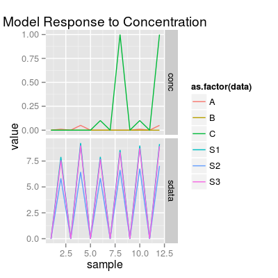
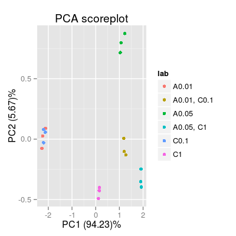

Demo Mixtures.
### Expreiment #1: test all combinations of mixtures for three analytes A, B and C set1 <- c("A 0.05", "B 0.05", "C 1", # pure analytes "A 0.05, B 0.05", "A 0.05, C 1", "B 0.05, C 1", # binary mixtures "A 0.05, B 0.05, C 1") # a ternary mixture # data model 'plsr' leads to a visually nice distribution of gas classes via PCA scoreplot sa1 <- SensorArray(model = "plsr", num = 3:5, dsd = 0) # look at the level of signal in reponse to pure analytes and mixtures # - the highest and the lowest levels of signal correspond to two pure analytes, # A and B, respectively (that will result in a nice triangle-bounded distribution of PCA scores) p1 <- plotSignal(sa1, set = set1) p1# If air samples are included, (in most cases) PCA shows the signal magnitudes # across gas classes in respect to air-level (zero-level) p2 <- plotPCA(sa1, set = rep(set1, 3)) p2p3 <- plotPCA(sa1, set = rep(set1, 3), air = FALSE) p3### Experiment #2: two analytes A and C, and their binary mixture AC # at differenct concentration levels set2 <- c("A 0.01", "A 0.05", "C 0.1", "C 1", "A 0.01, C 0.1", "A 0.05, C 1") # default data model 'ispline' sa2 <- SensorArray(num = 3:5, dsd = 0) p4 <- plotSignal(sa2, set = set2) p4
p5 <- plotPCA(sa2, set = rep(set2, 3), air = FALSE) p5